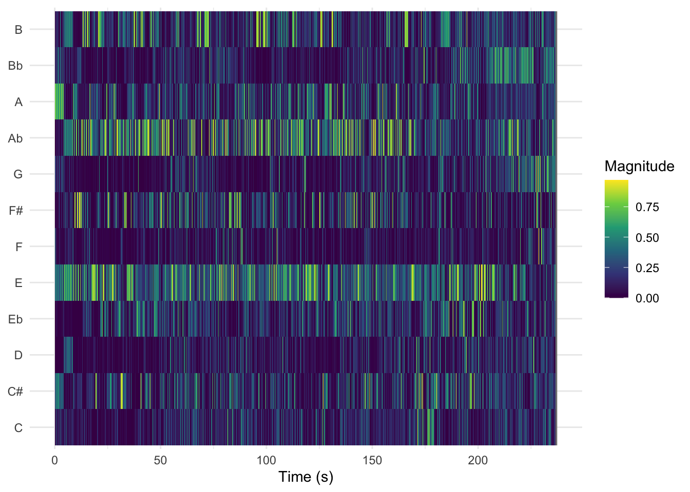
Urban Music Atlas
Welcome
Spanish-language urban music (2015–2025) across three geographic contexts.
This corpus examines Spanish-language urban music (2015–2025) across three geographic contexts: Puerto Rico, the Canary Islands, and mainland Spain. Puerto Rico represents the birthplace of reggaeton and a central node of Caribbean urban production. Mainland Spain represents a European market in which urban styles have hybridised with pop, flamenco, and experimental influences. The Canary Islands occupy a unique Atlantic position: politically Spanish yet historically and culturally connected to Latin America and geographically closer to Africa.
The corpus includes approximately 240 tracks drawn from representative artists in each region, balancing reggaeton-focused performers with hybrid urban artists. By analysing Spotify track-level audio features, I want to investigate whether measurable stylistic differences reflect proximity to the Caribbean. In particular, whether Canary Islands urbano occupies an intermediate position between Caribbean reggaeton and mainland Spanish urban pop.
Rather than assuming genre boundaries, the study explores how urban music ecosystems diverge or converge across space within the global streaming era.
These three chromagrams represent the pitch-class energy over time for three culturally rooted tracks from each region.
🇵🇷 DTMF · Bad Bunny — Puerto Rico
Shows prominent activity around A♭ and E, common in reggaeton production rooted in Puerto Rico.
🏝️ NI BORRACHO · Quevedo — Canary Islands
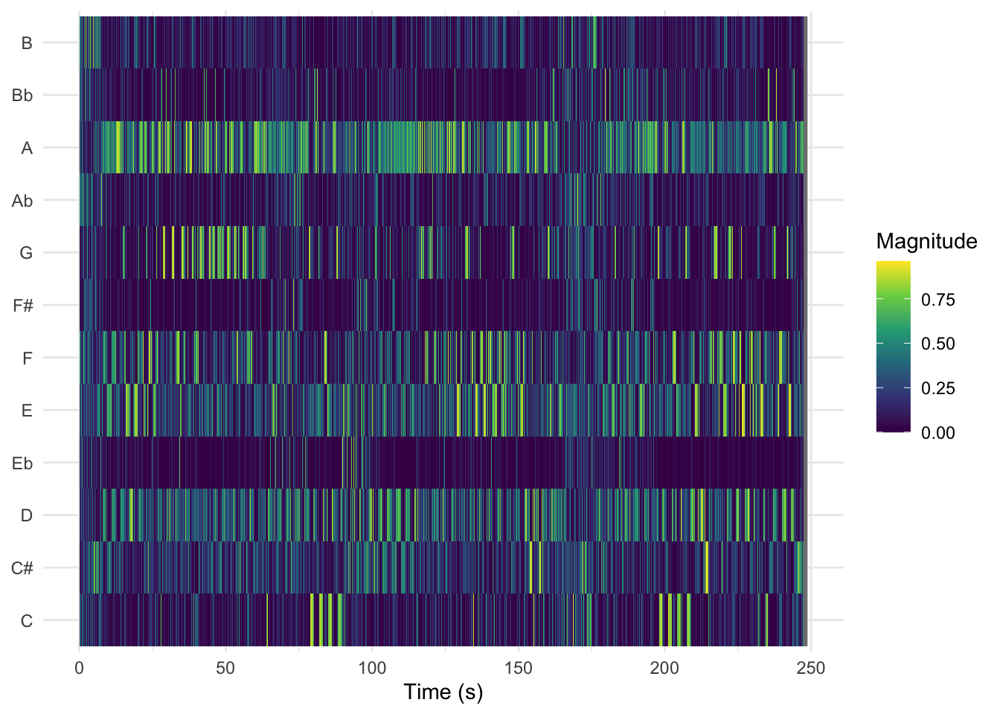
Energy evenly spread across A, G, F, and E — no single dominant tonal centre, suggesting a blend of Iberian and Latin American influences.
🇪🇸 MALAMENTE · Rosalía — Mainland Spain
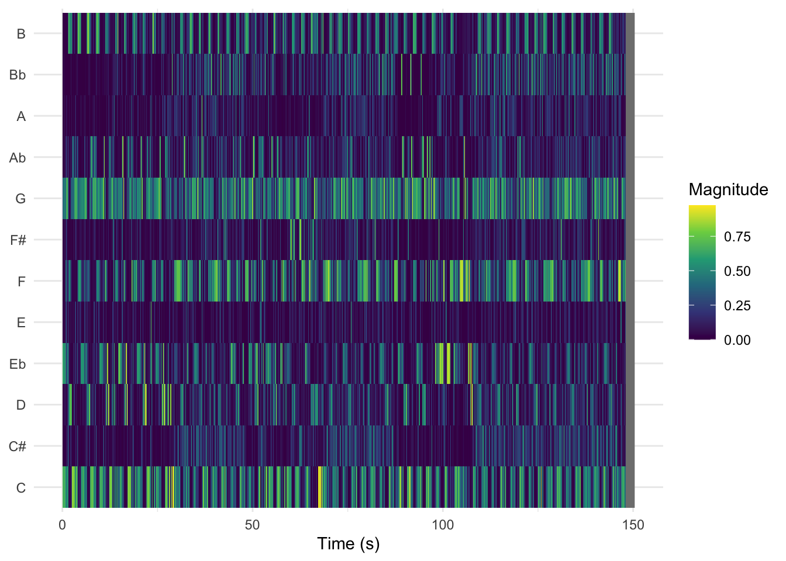
Strong concentration around G, C, and F — reflecting the harmonic language deeply embedded in flamenco tradition.
Quevedo’s chromagram appears harmonically closer to Bad Bunny than to Rosalía — hinting that Canarian music carries a stronger Latin Caribbean influence than a Peninsular Spanish one.
These cepstrograms show the timbral texture over time for each track using Mel-Frequency Cepstral Coefficients (MFCCs).
🇵🇷 Bad Bunny – DtMF (Puerto Rico)
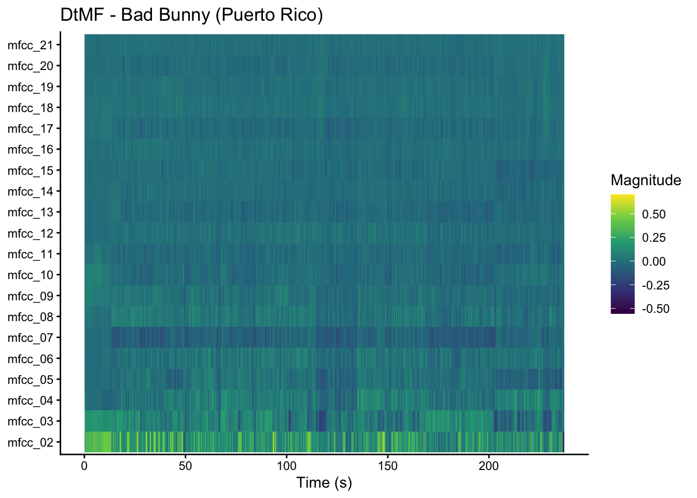
MFCC_02 shows the most variation with spikes throughout, indicating strong and consistent low-frequency energy, typical of reggeaton’s heavy bass and kick drum production.The upper MFCCs (15 to 21) are relatively uniform, suggesting a stable, electronically produced timbral texture with little acoustic variation.
🏝️ Quevedo – NI BORRACHO (Canary Islands)
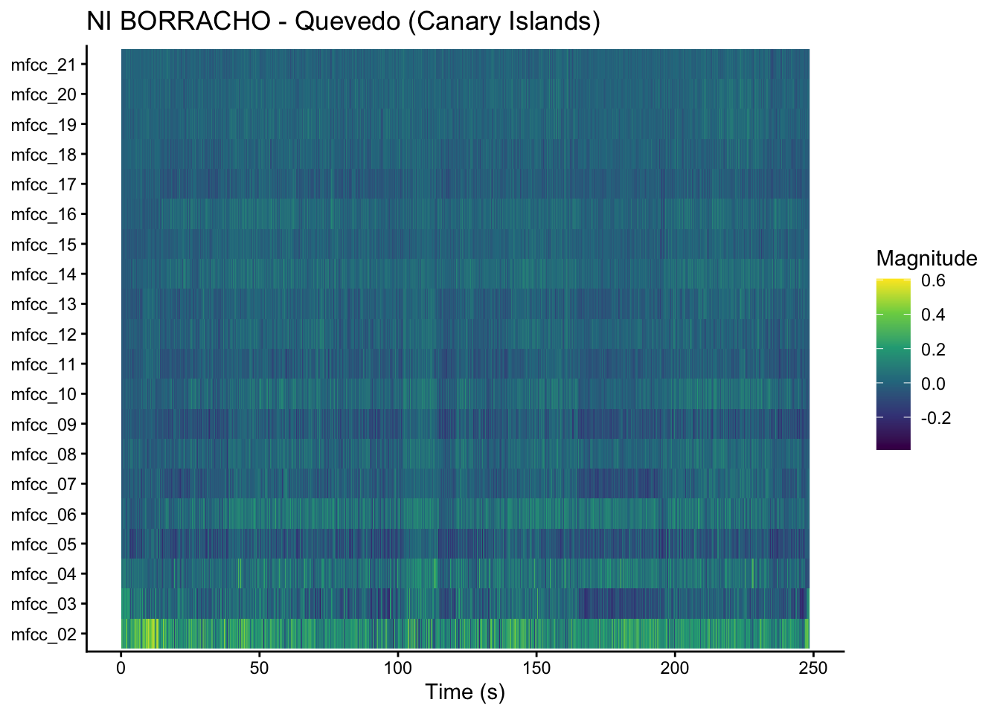
Just like DtMF, mfcc_02 also dominates with strong brightness. However, mfcc_07 shows more dramatic dark patches, moments of contrast that could correspond to the chorus of the song and the production drops that it has. The overall texture is more varied than Bad Bunny’s, hinting at a more melodically dynamic production style that blends urban and pop.
🇪🇸 Rosalía – Malamente (Spain)
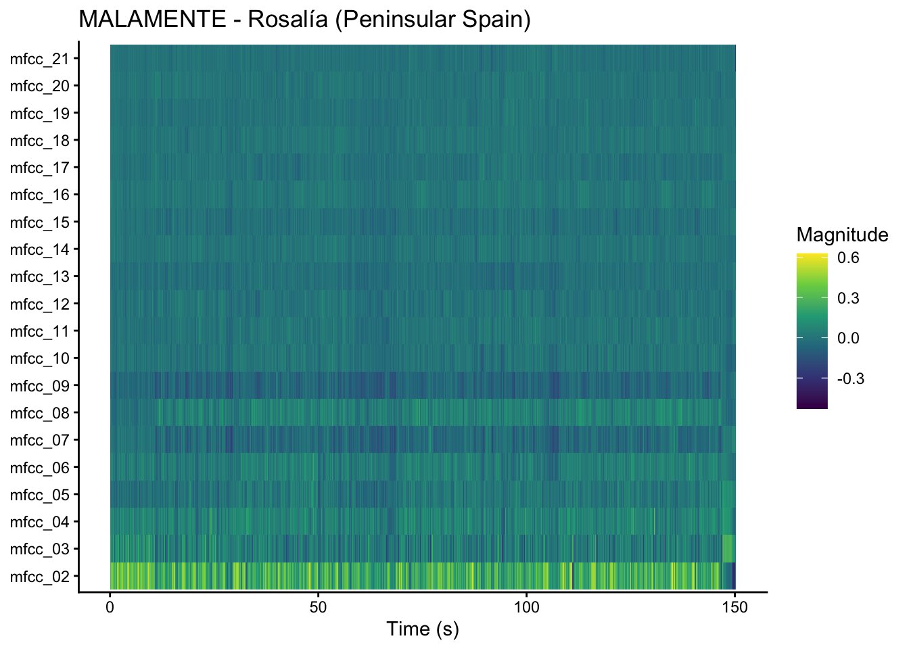
This is the most distinctive cepstogram of the three. MFCC_09 shows a persistent band of negative values for the entire length of the track which reflects the timbral quality of the guitar and flamenco vocals which occupy a different frequency than electronic production. MFCC_02 still shows brightness but less so than the other two tracks.
All three tracks share a strong mfcc_02 component, suggesting comparable low-frequency energy across regions. Bad Bunny and Quevedo are timbally closer to each other and Malamente stands out with its unique MFCC_09 pattern. This aligns with out hypothesis that Canarian urbano leans Caribbean rather than Iberian.
Self-similarity matrices reveal the internal structure of each track by comparing every moment against every other moment. Bright diagonal stripes indicate repeated sections; checkerboard patterns suggest clear verse/chorus alternation. Each track is analysed using both chroma (harmonic) and timbre (textural) data.
🇵🇷 DtMF · Bad Bunny (Puerto Rico)
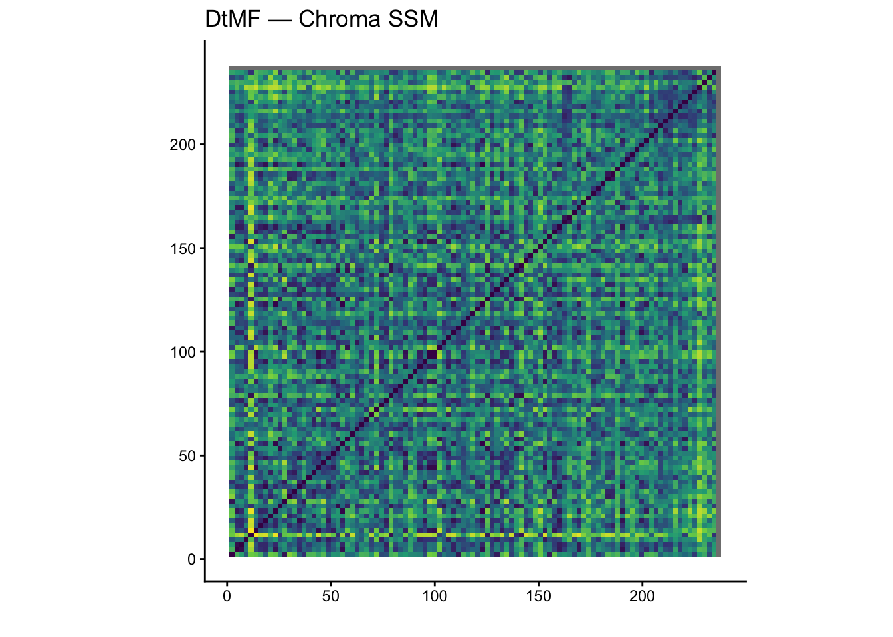
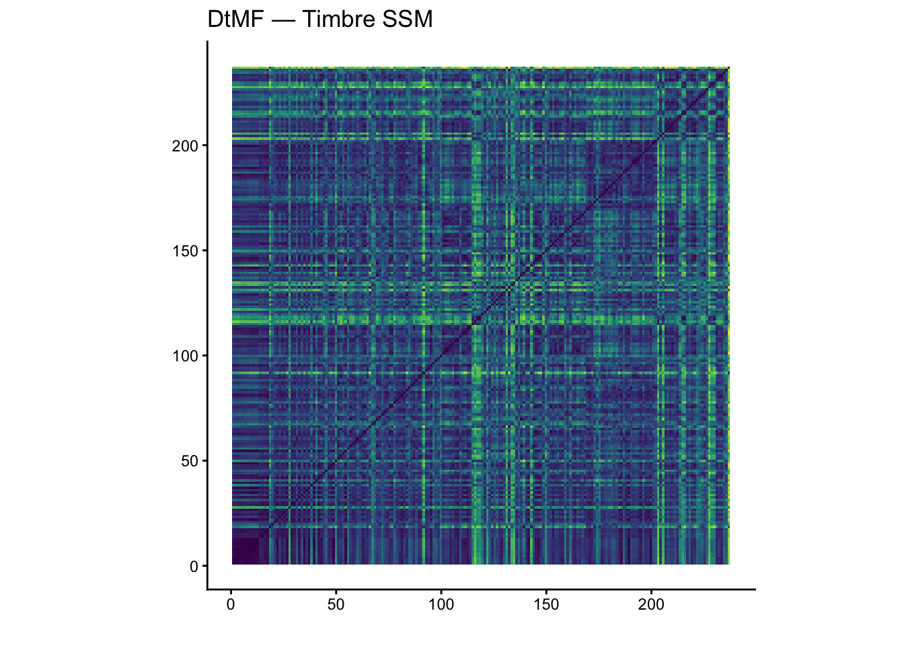
🏝️ NI BORRACHO · Quevedo (Canary Islands)
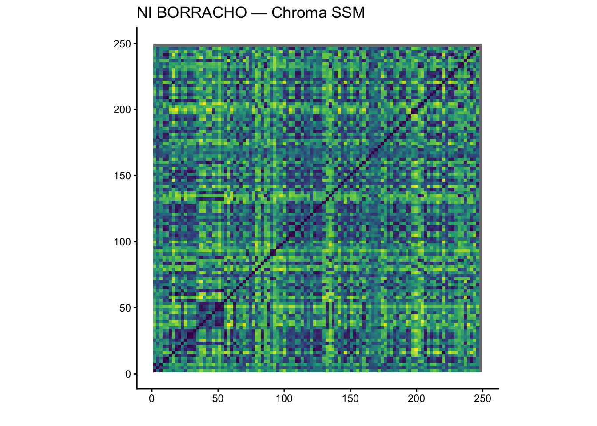
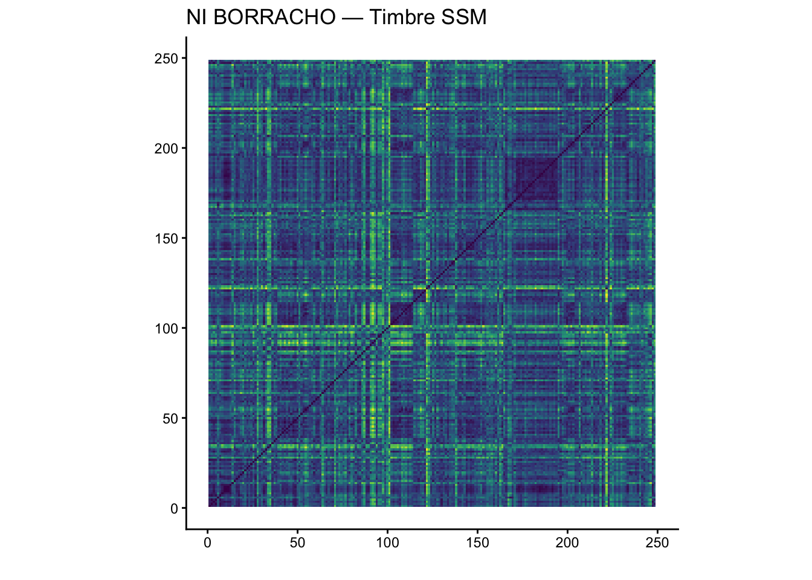
🇪🇸 Malamente · Rosalía (Peninsular Spain)
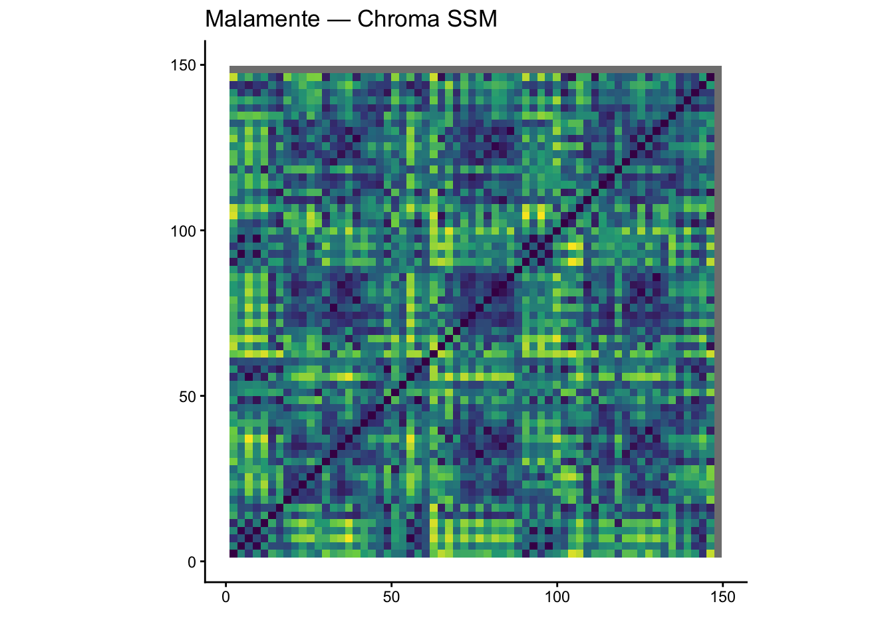
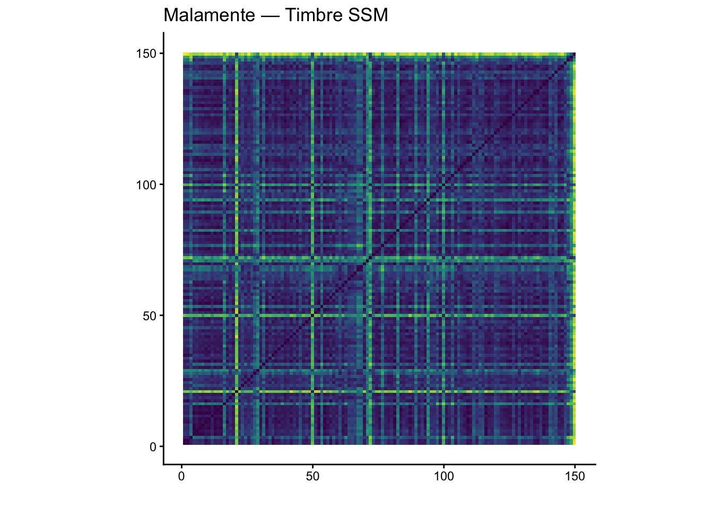